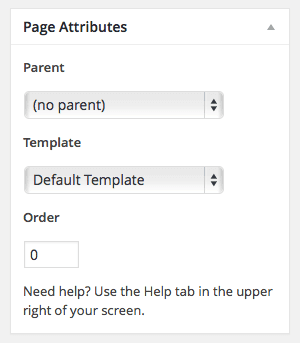

Indutri - Industry & Factory Business WordPress Theme
Getting Started
Firstly, we would like to thank you for purchasing Indutri Wordpress theme and chosen it for your website. We outline all kinds of good information, and provide you with all the details you need to use the Wordpress theme.
If you are unable to find your answer here in our documentation, feel free to ask for help from our support team, you can contact us via email gaviasthemes@gmail.com
Download and Installation
The instruction is to help you with installation of the Indutri theme.
Download packages
Purchase Indutri template from ThemeForest then you can download our template package on there.
Extract package that include all files and folders of theme. When done, you should see indutri_theme.zip (zip file name can be changed from version to version).
Once the download is complete, unzip the file and you would see the following packages:
- Guides - our detail documentation for the theme
- Theme folder - for manual installation
- Samples - the sample data of the demos, you can import it
- PSD - the PSD files of the theme
- Licensing - the theme license
System Requirements
When selecting a hosting service, you should check to see that these server requirements are provided and installed on their web servers:
- PHP version 5.6 or greater
- MySQL version 5.6 or greater
Theme Installation
There are 2 ways to install a Wordpress theme.
Installing Theme From the WordPress Dashboard
Installing a WordPress theme is super easy, you’ll see our video guide https://www.youtube.com/watch?v=iq4WZ-Mjbwg:
- Step 1: Navigate to Appearance → Themes in your WordPress admin dashboard.
- Step 2: Click the Add New button at the top of the page and go for the Upload option.
- Step 3: Choose indutri_theme.zip then click Install
- Step 4: Wait while the theme is uploaded and installed then activate the theme.
Install theme via FTP
Many users are on shared hosting with low upload limits, and in such situations the Indutri theme is often too large to install through Wordpress. We suggest you should upload it via FTP.
If you don't know how to use FTP visit this link for information: http://codex.wordpress.org/FTP_Clients . You will need to first uncompress the PACKAGE-theme.zip file you have found in the master zip downloaded from Themeforest. This zip uncompresses into a normal folder. This unzipped folder is all you need to transfer via ftp and if you open it, you will see all sorts of folders and css and php files which together contain all the theme coding.
Using the FTP program transfer this folder which contains the above files to the Wordpress installation theme root directory: /wp-content/themes.
Do not upload any of the other files or folders such as licensing or resource or documentation. Uploading any of the other folders may cause problems resulting in the theme not working properly. Learn from Wordpress Official Documentation about installing theme with FTP client or with cPanel: http://codex.wordpress.org/Using_Themes
Activate Indutri as default theme
After completing the upload, activate the theme as per activating any other theme.
Goto your Dashboard >> Appearance >> Themes >> Activate Indutri template
Follow the instruction from the image below:
Known problems when installing the theme
a. The “Broken theme and/or stylesheets missing” error is most common when you install or activate a new theme.
If you get an error saying that the stylesheet is missing, then you have uploaded the wrong folder. Please check that you are uploading the indutri_theme.zip within the Theme Files folder. You have to unzip the package file that you download from Themeforest to find this.
b. Problems with uploading via WP admin panel due Upload limit.
You may check your file upload limit on Your Media Uploader page in WordPress. Depending upon the web hosting company and the conditions of the service they provide it may vary. The most common is about 8 MB which is more or less enough. But uploading some media files like audio and video may become a problem with for example 2 MB upload limit.
We decided to share some tips about how to extend your maximum file upload size in WordPress:
1. Through functions.php file:
You may add the below mentioned code in the functions.php file of your theme
@ini_set( 'upload_max_size' , '64M' );
@ini_set( 'post_max_size', '64M');
@ini_set( 'max_execution_time', '300' );
2. Through PHP.INI file:
If you cannot see the php.ini file in your directory create the new one with below mentioned code and upload it to your root folder on your web server.
If you can see the php.ini file then change parameters or add :
upload_max_filesize = 64M
post_max_size = 64M
max_execution_time = 300
In case that tip does not work with 64MB, try it with 10MB.
3. Through .htaccess method
You may try modifying the existing .htaccess file in the root directory or creating a new one.
Add the following code in the existing or new .htacess file:
php_value upload_max_filesize 64M
php_value post_max_size 64M
php_value max_execution_time 300
php_value max_input_time 300
You can reset all of the setting for the each page on our custom panel by clicking “Reset” button on the bottom.
Plugins Installation
Right after the theme was activated, a notification at the top of the screen will suggest to continue with the installation of the plugins recommended for getting the best our of your theme.
Follow the installation steps below:
Step 1. Click ‘Begin installing plugins‘ and select the plugins you need to install from the list.
Step 2: Select all plugins then choose Install , Click Apply to install all plugins
- Plugins Using in Indutri theme
- Contact Form 7: Allow you create contact forms on Contact Page.
- MailChimp : to use newsletter function
- Revolution Slider: premium responsive slider.
- Elementor: Powerful Elementor Page Builder to create page layout.
- WooCommerce: The Shop engine for your WordPress site.
- Indutri Themer: Implement rick functions for themes base on gavias framework and load widgets for theme used.
- Metabox : Create custom meta boxes and custom fields for any post type in WordPress.
- Events Calendar : Create an events calendar and manage it with ease. The Events Calendar plugin provides professional-level quality and features backed by a team you can trust.
- Custom Twitter Feeds Plugin : Display completely customizable, responsive and search engine crawlable Twitter feeds on your website
Step 3: After Installing all Plugins, select Activate then click Apply to active all plugins.
Install Data Demo
1. Importing The Demo Data - XML File
The Indutri theme comes with importable demo data, such as pages, products, blog, posts, etc, to help you get started in case you’re running on a fresh WordPress installation.
But before import data you should go to "Settings->Permalinks and choose Default in common settings" , you import or export data will not be lost.
Then Go to Elementor-> Settings and choose Custom in post types and Enable Elementor for pages, posts and custom post types. Click "Save Changes" to save your setting.
And go to step by step bellow:
Step 1: From the WordPress admin area go to Theme Settings >> and open "Demo Importer" tab.
The importer should be run only once. If something went wrong and you need to import the content again, you may need to reset your WordPress.
Use this plugin to reset the WordPress database : http://wordpress.org/plugins/wordpress-database-reset/
Step 2: Replace URL assets images
After import Dummy Data you need Replace URL assets images for your site, from your WordPress dashboard, navigate to Elementor → Tools→ Replace Url tab.
- old-url: https://themesgavias.com/wp/indutri/
- new-url: is url of your website like https://[your-url]/
Step 3: Set a page as Home Page
After import Dummy Data you need to set default Home page for your site, from your WordPress dashboard, navigate to Settings → Reading.
Select “A static page” and choose “Dummy Homepage” as the Front Page.
Save change then Homepage data sample will be set.
If Revolution Slider doesn't auto import, please you can import manual2. Import Revolution Slider
From the WordPress admin area go to Revolution Slider >> Import Slider and select Slider file on our package.
you can see all slider displayed in here and you can
+ Embed slider.
+Export.
+Delete.
+Duplicate.
+Preview.
+Settings.
+Edit slider.
3. Install widget
Go to Admin Panel -> Appearance -> Widgets.
You can see all our widgets, easy to configure by drag and drop Widgets to sidebar.
Then you can use sidebars to position you want. Even you can use sidebar for MegaMenu.
Morever you can search and add more plugins for your purpose by searching on the internet.
Theme Configuration
Theme Configuration → Logo
You can upload logo image in edit header with Elementor
Step 1 - Login to your WordPress Dasrdoard.
Step 2 - You can edit header of page
Or navigate to Header Builder and edit header

Step 3 - You can upload logo to header by GVA Logo element
Logo default and logo mobile
You can upload logo image default of your website in the Customize. If the logo is not uploaded, then your site name will be used.
Please, follow the steps below to upload your logo:
Step 1 - Login to your WordPress Dasrdoard.
Step 2 - Go to Dasrdoard > Theme Settings > Header Options Tab
Step 3 - Upload your logo by clicking on Select Image .
Theme Configuration → Header
Step 1: Login to your WordPress admin panel, and navigate to Header Builder
Step 2: You can add new or edit available header
Step 3: Settings global header layout. Go to Theme Options → Header
Step 3: Settings separate header for page. Go to Pages to edit page that you need set separate header
Theme Configuration → Footer
Step 1: Login to your WordPress admin panel, and navigate to Footer Builder
Step 2: You can add new or edit available footer
Step 3: Settings global footer layout. Go to Theme Options → Footer
Step 3: Settings separate footer for page. Go to Pages to edit page that you need set separate footer
Theme Configuration → Menu
A. Creating your menu
Step 1- Login to the WordPress Dasrdoard. Step 2- From the 'Appearance' menu on the left-hand side of the Dashboard, select the 'Menus' option to bring up the Menu Editor.Step 3 - Select Create a new menu at the top of the page.
Step 4 - Enter a name for your new menu in the Menu Name box.
Step 5 - Click the Create Menu button. Your menu is now defined, and you can now add pages to it (steps below).
B. Adding pages to your menu
Step 1 - Locate the pane entitled Pages.
Step 2 - Within this pane, select the View All link to bring up a list of all the currently published Pages on your site. Step 3 - Select the Pages that you want to add by clicking the checkbox next to each Page's title. Step 4 - Click the Add to Menu button located at the bottom of this pane to add your selection(s) to the menu that you created in the previous step. Step 5 - Click the Save Menu button once you've added all the menu items you want. Your custom menu has now been saved.The Screen Options allow you to choose which items you can use to add to a menu. Certain items, like Posts or Products are hidden by default. The Screen Options are located in the top right corner of your WordPress Dasrdoard.
C. Assigning a Menu to a Location
Once you've created a menu and filled it with items, it's time to assign it to one of the theme pre-defined locations.
Step 1 - Go to Appearance > Menus and click Manage Locations. Step 2 - Assign each Theme Location with a menu. You can assign menus to multiple Theme Locations. Step 3 - Click the Save Changes button.D. Assigning a Menu to a Header
Step 1: Login to your WordPress admin panel, and navigate to Header Builder
Step 2: Edit header you using in website and you can add/edit "GVA Navigation Menu" Element
E. Config enable megamenu.
And Front end look like
Theme Configuration → Home Page
You can quickly build a home page using Visual Composer for WordPress that is drag and drop frontend and backend page builder plugin that will save you tons of time working on the site content. You will be able to take full control over your WordPress site, build any layout you can imagine – no programming knowledge required
From your Dashboard admin Navigate to Pages
- Select All Pages to see all page then click edit one page you want
- Select Add New to create new page
A. How to use Elementor
Have you ever used Elementor ? Please follow that guide first : Elementor guide
Official Plugin Documentation For More information about the Elementor check the official documentation.
Watch video about Elementor
a. Add and modify Row Layout
Step 1 - Go to your page / post, first activate the backend editor and click Edit with Elementor
Step 2 - You will see all element in left sidebar, please choose element that you want to use.
or you will see button Add New Section, Add Template, please click to button to add element.
Step 3 - To change the Row layout ( number of columns ) you need to click button content will display in leftsidebar.
b. Edit Element
Click on the Edit This Element (pencil icon) to Edit the Row element , when you click to button all content will display in left sidebar follow you can change .
c. Remove Element
Trash Box Icon - To Remove Row, Column or Module you need to click the Trash Box icon.
d. Add Element
Trash Box Icon - To Add Row, Column , please click to add icon.
B. Page Options
a. Page Attributes
You can select page attributes on right sidebar of page admin layout. Each Page templates have each styles

b. Page configure default template
For each page you can change the page layout style, header skin, footer skin and much more! Check the screenshot and read the documentation to see how it works
C. Set a page as Home Page
Step 1 - Go to Settings > Reading in your WordPress Dasrdoard panel.
Step 2 - Set "Front page displays" to a "Static Page".
Step 3 - In the drop down menu for "Front Page" choose a page which will be your home page.
Step 4 - Leave the drop down menu for "Posts page" empty, as this is not used by the theme.
Step 5 - Save changes.
Theme Configuration → Blog Page
A. Create the blog post
Step 1 - Log in to your WordPress Administration Panel (Dashboard)
Step 2 - Click the 'Posts' tab.
Step 3 - Click the 'Add New' sub-tab.
Step 4 - Start filling in the blanks: enter your post title in the upper field, and enter your post body content in the main post editing box below it.
Step 5 - As needed, select a category, add tags, post format, fill in the meta setings below the editor.
Step 6 - Upload a featured image for your Post.
Step 7 - Select Post Format. You can create blog post with a lot of Formats like link, gallery, image ..... Select format on Format box from in right sidebar
Step 8 - Scroll down until you see the Post Configuration box, there you will be able to customize the post.
Step 9 - When your post is ready, click Publish.
B. Manager current all blogs
Navigate to Posts → All Posts
You can see all informations of you blog post, add new, edit or delete them.
C. Create Blog Page
Step 1: Log in to your WordPress Administration Panel (Dashboard).
Step 2: On the top left side of the WordPress dashboard, click Pages > Add New
Step 3: Click Edit with Elementor to enter Elementor Page Builder

Step 4: Use GVA Post element
Theme Configuration → Testimonials
Step 1: Add GVA Testimonial Element in ElementorStep 2: Add Content Testimonial & Settings Carousel

Theme Configuration → Brands
Step 1: Add GVA Testimonial Element in ElementorStep 2: Add Content brand & Settings Carousel
Theme Configuration → Newsletter
We are using MailChimp for WP plugin for Newsletter subscribe. You can read more about MailChimp from here
Follow that step below to help you can collect email of subscribers.
Step 1 - Signup for Mailchimp account then create your lists to collect email
Step 2 - Install and active plugin MailChimp for WP
Step 3 - Navigate to MailChimp for WP > MailChimp then connect with your mailchimp account you created from step 1
Step 4 - Create mailchimp form to collect email. Navigate to Forms
Import HTML Code below on section Form mark-up Source
Source :
<div class="newsletter-form">
<div class="content-form">
<input type="email" name="EMAIL" placeholder="Enter E-Mail Address" required />
<span class="form-action">
<input class="newsletter-submit" type="submit" value="Subscribe" />
</span>
</div>
</div>
Step 5 - After creating from of your plugin. You must set position where you want to display.
Theme Configuration → Twitter Feed
Settings Twitter Feed plugin follow
Using shortcode [custom-twitter-feeds] in Elementor follow: <
Theme Configuration → Contact Page
A. Create Contact Form.
Make sure you install and active Contact Form 7 plugin to continue reading.
Step 1 - Log in to your WordPress Dashboard, go to Contact > Add New
Step 2 - Give a Name to your form and change Mail Info
B. Create Contact Page
Step 1: Log in to your WordPress Administration Panel (Dashboard).
Step 2: On the top left side of the WordPress dashboard, click Pages > Add New
Step 3: Click Edit with Elementor to enter Elementor Page Builder
Step 4: Use Shortcode Element and paste shortcode of form
Theme Customization
Indutri Theme use Customizer provides an ultra effective and intuitive way to customize theme layout & setting with real-time preview. Bring all of settings to customizer, you do not need to using another theme option anymore
To access Customizer go to your admin Dashboard Navigate to >> Themes Settings
1. General Options : Manage general setting layout, skins...
2. Header Options: select your header style for global
3. Footer Options: select your footer style for global
4. Styling : Customize style color, font ... for theme
5. Typography : Customize font ... for theme
6. Blog: Manager setting layout, sidebar of blog page
7. Page Meta Options : Manager setting of Page
8. WooCommerce Options : Manage setting of WooCommerce function
9. Blog : Manage global setting for Blog
10. Social Profiles: Manage setting of Social link
11. Custom Code: Manage setting of custome code css, js of theme
How to translate the theme
The easiest way to translate theme to the language of your choice is to use "WPML" plugin.
- To begin, be sure you have the WPML Plugin installed and activated, along with the WPML String Translation plugin.
- To set up WPML the first time, follow their Getting Started Guide.To begin translating, select WPML (in the Dashboard menu) -> String Translation. You should see a list of the strings in the theme (there should be only four), with blue translation links to the right. Click these links to reveal the list of languages you use on your blog and the associated translations.
- How to set and translate main features of the theme
- Using translation management http://wpml.org/documentation/translating-your-contents/using-the-translation-editor/
- Translation Management & Features – http://wpml.org/documentation/translating-your-contents/using-the-translation-editor/translation-management-features/
- Translating URL slugs – http://wpml.org/documentation/getting-started-guide/translating-page-slugs/
- How to scan strings coming from the theme
- http://wpml.org/documentation/getting-started-guide/theme-localization/
- How to translate strings using String Translation
- http://wpml.org/documentation/getting-started-guide/string-translation/
- If adjustment is needed for WPML language switcher please also add this
- http://wpml.org/documentation/getting-started-guide/language-setup/custom-language-switcher/
- If you need more help with WPML plugin. Please go WPML Forum
FAQs
1. How to update Theme
a. Update Theme via WordPress
Updating the theme via WordPress is very similar to the install process via WordPress. Make sure you had backup all of your customization in our theme.
Follow the steps below to update your theme via WordPress:
Step 1 - Download latest theme package on ThemeForest
Step 2 - Log into your WordPress Dashboard.
Step 3 - Go to Appearance > Themes.
Step 4 - Deactivate the Indutri Theme by simply activating a different theme. Once you activate a different theme, you can delete the mode theme.
Step 5 - Delete the Indutri Theme. Do not worry, your content will not be lost!
Step 6 - Then simply upload the newest “indutri_theme.zip” file in the Appearance > Themes section. Click on the Install Themes tab at the top and choose to upload the zip file. You have this step explained in section: Theme Installation via WordPress.
b. Update theme via FTP
Updating the theme via FTP is very similar to the install process via FTP.
Follow the steps below to update your theme via FTP:
Step 1 - Go to .../wp-content > themes location on your server using a FTP client and backup your "Indutri" theme folder by saving it to your computer, or you can choose to simply delete it. Your content will not be lost.
Step 2 - Download the new version of Indutri theme from your Themeforest and retrieve Indutri folder by unpacking the zip that you download from Themeforest and indutri_theme.zip.
Step 3 - Then simply drag and drop the new "Indutri" theme folder into .../wp-content > themes location. Choose to “Replace” the current one if you did not delete it.
Step 4 - Log into your WordPress Dasrdoard, go to Appearance > Themes and activate the new Indutri theme.
2. How to create Child Theme
What is a Child Theme?
A child theme is a theme that inherits the functionality of another theme, called the parent theme. Child themes allow you to modify, or add to the functionality of that parent theme. A child theme is the best, safest, and easiest way to modify an existing theme, whether you want to make a few tiny changes or extensive changes. Instead of modifying the theme files directly, you can create a child theme and override within.
Why use a Child Theme?
if you modify an existing theme and it is updated, your changes will be lost. With a child theme, you can update the parent theme (which might be important for security or functionality) and still keep your changes. It’s a great way to get started if you are just learning WordPress theme development.
How to create Create child ?
Follow that documentation to create Child Theme Child Themes - Codex
Using that plugin to create Child Theme : One Click Child Theme
3. How to Speed Optimization
If you think your website takes too much time to load maybe you should.
- Install a Cache Plugin for WordPress. We recommend W3 Total Cache.
- Install an Image Compress Plugin. We recommend WP Smush It.
- Install a Database Optimizer Plugin We recommend WP Optimize
- Reduce the number of posts on the page
- Reduce the number of unnecessary plugins.
- Use more icons and less images.
4. How To Enable the Registration Form on the ‘Login/My Account’ page?
In case you cannot see the Registration Form on the My Account page or checkout page, it means you need to enable it.
You can find this setting by navigating to WooCommerce >> Settings.
Open Account Tab In the Registration section, make sure the" Enable registration on the "Checkout" page" and “Enable registration on the “My Account” page” options is checked.
This is what you should be seeing on your screen:
5. How To Add Color/Size selection box on the product page?
In WooCommerce, you can define product attributes, such as size or color, to use be used as product options.
Start by navigating to Products → Attributes.
For example an attribute could be “Size“. Then you need to Configure its terms. Those would be “Small, Medium, Large“.

Once defined, these global attributes can be assigned to your variable products.
6. How to set up image size for WooCommerce
These settings affect the actual dimensions of your product images in the shop pages. You can skip this step in case you’re starting a new website and your WordPress installation is fresh, but if you’re switching from another theme and you already have products in your store, you need to make sure the WooCommerce image sizes are the correct ones for your newly installed theme.
a. Navigate to WooCommerce → Settings → Products and find the “Product Image Sizes ” section at the bottom of the page.
Update those values with the following this image for Indutri theme.
b. If your site has image with another size. To see the changes after you update the image sizes, you need to re-generate the images by using Regen.Thumbnails Plugin
- Go to Plugins Tab then search and install Regen.Thumbnails plugin
- Navigating to Tools → Regen.Thumbnails then re-generate your images
Get Support
If you are unable to find your answer here in our documentation, if you have problem, please you can contact us, I will check and help you soon. Please be sure to include your site URL as well or send us an email.
Our support scope
Our support covers configuration, building site as demo, trouble using any features, and bug fixes. We don't provide support for customizations or 3rd party extension.
Our support time
We try our best to monitor the email around the clock, however, this is not always possible due to different time zones. We will try to reply you as fast as we can.
Our working time is 8.00 AM - 5.30 PM, Monday to Friday (GMT+7). So if ask for help in the weekend, you may have to wait a little bit for support and please be patient.